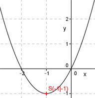

Aufgabe 25 Bestimmen Sie die Koordinaten des Scheitelpunktes S und der Nullstellen N der folgenden Funktion. y = x2 + 2x Scheitelpunkt : y = x2 + 2x Quadratische Ergänzung : y = x2 + 2x + 1 – 1 Mit x2 + 2x + 1 = (x + 1)2 Scheitelpunktform : y = (x + 1)2 - 1 Nullstellen : 0 = x2 + 2x 0 = x(x + 2) S(-1|-1) Das Produkt x(x + 2) wird dann = 0, wenn entweder x = 0 oder x + 2 = 0. 1. Nullstelle bei x = 0 N1(0|0) x + 2 = 0 |-2 x = -2 2. Nullstelle bei x = -2 N2(-2|0) 